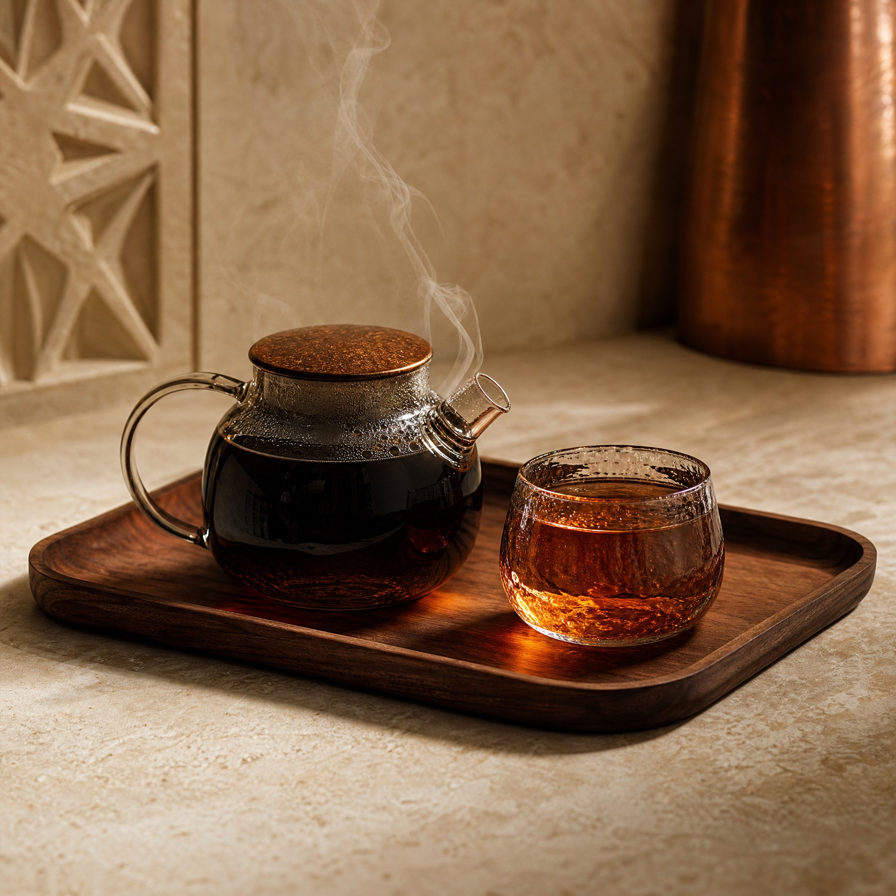
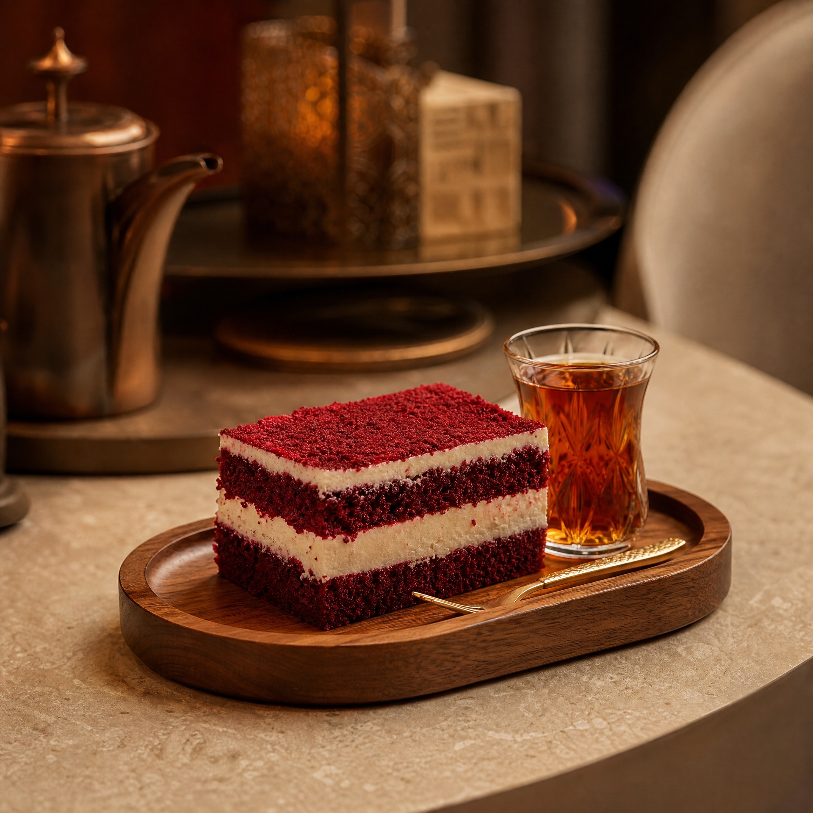
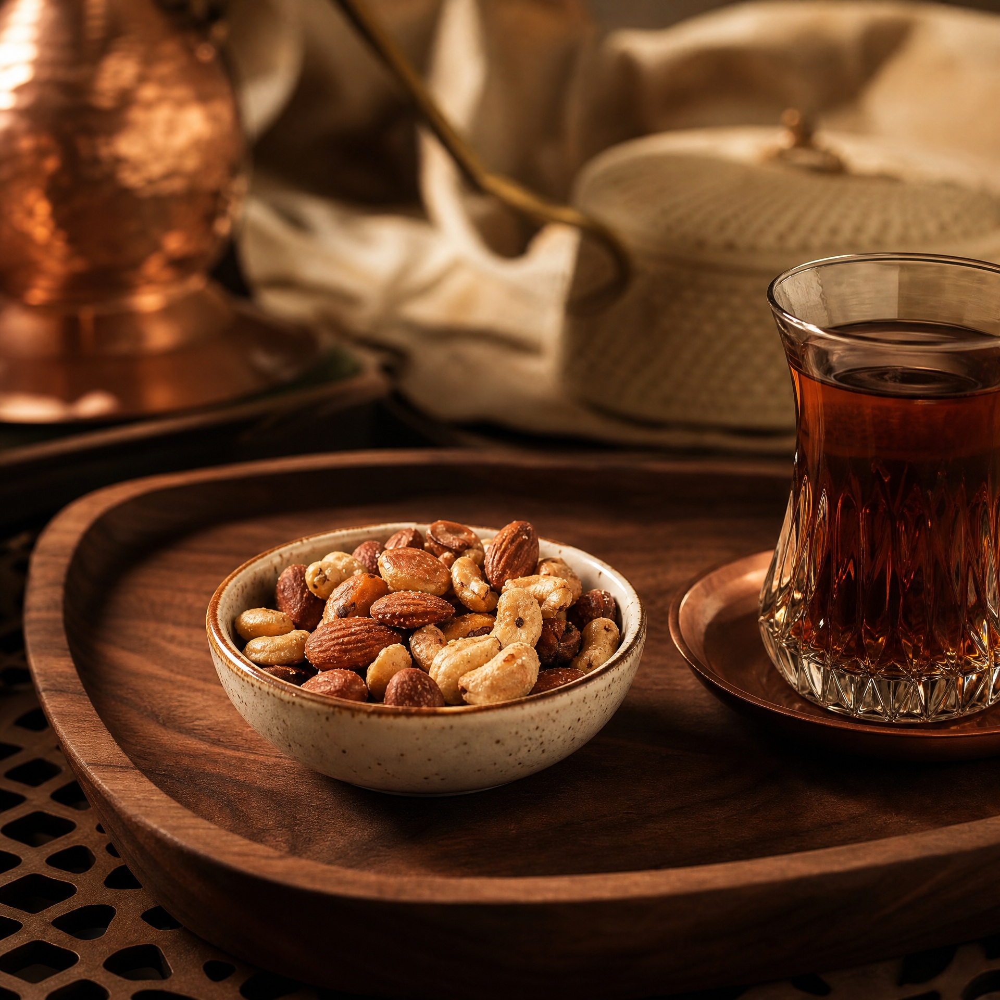

01
شاي أباريق
الاختيار الذي يبدأ منه اسم المكان.
شاي على مهل · المدينة المنورة
إبريق دافئ، ضوء كهرماني، ووقت لا يحتاج إلى استعجال.
من اسم المكان إلى الإبريق الذي يميّز حضوره، كل تفصيل هنا يدعو إلى التمهّل. شاي عراقي مبخر، دم الغزال، مكسرات، وحلويات تُقدّم في ضوء دافئ يشبه جلسة تعرفها من قبل.
الهوية مستوحاة من ألوان ورق القائمة، الخشب الداكن، النحاس الهادئ، والكنب الكريمي الظاهر في الصور العامة للمحل.
اختيارات مقترحة من الأسماء الظاهرة في قائمة المحل العامة. لا تُنشر كـ«الأفضل» إلا بعد اعتماد بيانات المبيعات.

الاختيار الذي يبدأ منه اسم المكان.

حلوى ظاهرة في قائمة أباريق المصورة.

مرافقة بسيطة لإبريق أطول.
الفرع الموثق المتاح في المصادر العامة: شارع الأمير مقرن بن عبدالعزيز، حي المبعوث، المدينة المنورة.